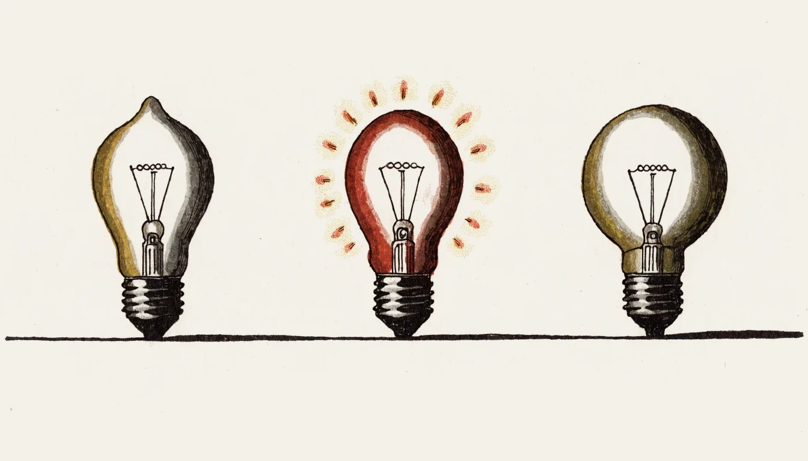
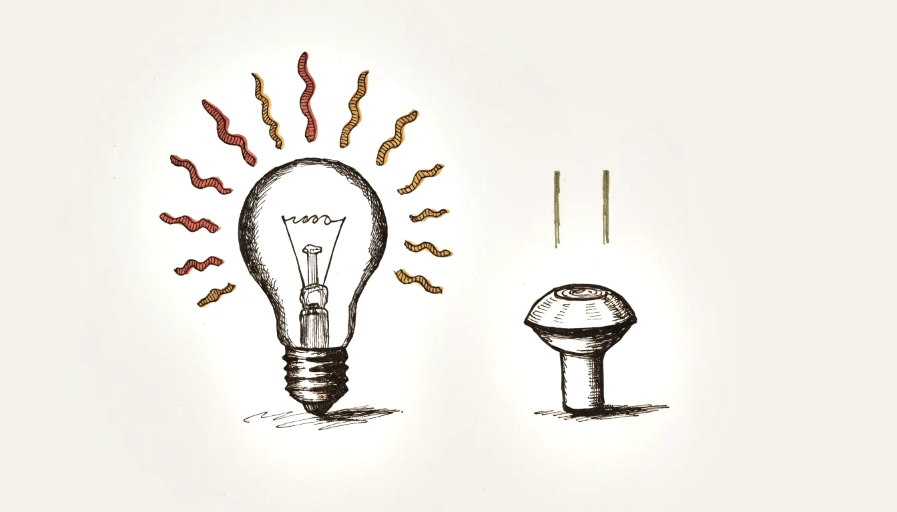
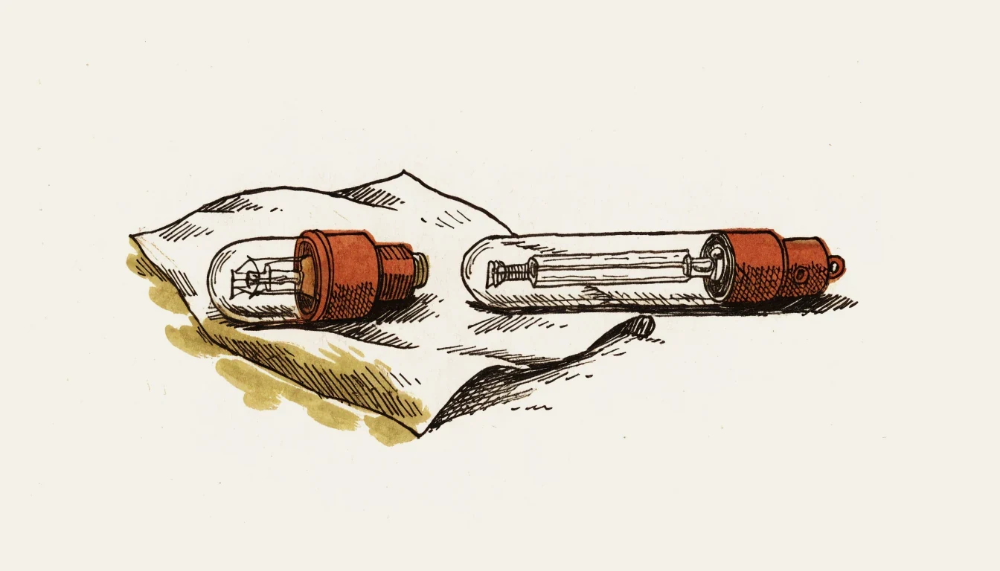
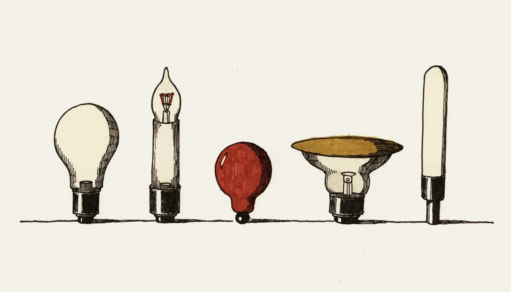

Aufbau · Wirkungsgrad · Modelle · Halogentechnik · Sockel Design · efficiency · types · halogen technology · caps
Die Glühlampe ist ein Temperaturstrahler. Ein dünner Draht wird vom Strom so stark erhitzt, dass er glüht und Licht abgibt. Das ist die älteste elektrische Lichtquelle — und zugleich die ineffizienteste, die je in Serie gebaut wurde.
An incandescent lamp is a thermal radiator. Current heats a thin wire until it glows and emits light. It is the oldest electric light source — and at the same time the least efficient ever mass-produced.
Auch wenn die klassische Glühlampe für die Allgemeinbeleuchtung nicht mehr verkauft werden darf, gehört sie in die Ausbildung: Sie erklärt die Begriffe Lichtstrom, Lichtausbeute und Farbtemperatur am einfachsten Beispiel, und in Bestandsanlagen trifft man sie weiterhin an.
Even though the classic bulb may no longer be sold for general lighting, it belongs in training: it explains luminous flux, luminous efficacy and colour temperature on the simplest possible example, and it is still found in existing installations.
Von der aufgenommenen Leistung werden nur rund 5 % in sichtbares Licht umgesetzt. Die übrigen 95 % gehen als Wärme verloren. Eine Glühlampe ist damit genau genommen ein kleiner Heizkörper, der nebenbei etwas leuchtet.
Only about 5 % of the input power becomes visible light. The remaining 95 % is lost as heat. Strictly speaking an incandescent lamp is a small heater that happens to glow a little.

Der Polleiter gehört an den Fusskontakt, der Neutralleiter ans Gewinde. Beim Wechseln der Lampe ist das Gewinde leichter berührbar als der Fusskontakt — vertauscht man die beiden, steht das Gewinde beim ausgeschalteten Schalter unter Spannung.
The line conductor belongs on the foot contact, the neutral on the thread. When changing a lamp the thread is easier to touch than the foot contact — swap the two and the thread stays live even with the switch off.
Die Lichtausbeute sagt, wie viel Licht aus einem Watt herausgeholt wird. Sie ist die wichtigste Kennzahl beim Vergleich von Lichtquellen.
The luminous efficacy states how much light is obtained from one watt. It is the key figure when comparing light sources.
| LichtquelleLight source | LichtausbeuteEfficacy | LebensdauerLife | Farbwiedergabe RaColour rendering Ra |
|---|---|---|---|
| GlühlampeIncandescent | ≈ 10 … 15 lm/W | ≈ 1000 h | 100 |
| HalogenlampeHalogen | ≈ 15 … 25 lm/W | 2000 … 4000 h | 100 |
| LeuchtstofflampeFluorescent | ≈ 60 … 100 lm/W | 10 000 … 20 000 h | 80 … 90 |
| LED | ≈ 80 … 200 lm/W | 20 000 … 50 000 h | 80 … 95 |
Richtwerte. Die genauen Zahlen stehen auf der Verpackung und im Datenblatt des Herstellers. Guide values. Exact figures are on the packaging and in the manufacturer's data sheet.
Die Wendel erreicht rund 2500 °C. Bei dieser Temperatur liegt der grösste Teil der abgestrahlten Energie im Infrarotbereich — also in der Wärme, nicht im sichtbaren Licht. Höher heizen ginge zwar, dann verdampft aber das Wolfram zu schnell und die Lampe brennt durch. Die Glühlampe steckt in diesem Zielkonflikt fest: mehr Licht bedeutet weniger Lebensdauer.
The filament reaches around 2500 °C. At that temperature most of the radiated energy lies in the infrared — in heat, not visible light. Running hotter is possible, but then the tungsten evaporates too fast and the lamp burns out. The incandescent lamp is stuck in this conflict: more light means less life.

Dieser hohe Einschaltstrom ist der Grund, weshalb eine Glühlampe fast immer beim Einschalten durchbrennt und selten mitten im Betrieb.
This high inrush is the reason why a bulb almost always fails at switch-on and rarely in the middle of operation.
Die Halogenlampe ist eine verbesserte Glühlampe. Dem Füllgas wird ein Halogen beigemischt (Jod oder Brom). Damit entsteht ein Kreisprozess, der das verdampfte Wolfram wieder zur Wendel zurückbringt.
A halogen lamp is an improved incandescent lamp. A halogen (iodine or bromine) is added to the fill gas, creating a cycle that returns evaporated tungsten to the filament.
Erstens schwärzt der Kolben nicht, die Lampe bleibt bis zum Schluss gleich hell. Zweitens darf die Wendel heisser betrieben werden — das gibt mehr Licht pro Watt und eine leicht weissere Lichtfarbe. Der Kreisprozess funktioniert allerdings nur bei hoher Kolbentemperatur, weshalb der Kolben klein und aus Quarzglas ist.
First, the bulb does not blacken and the lamp stays equally bright to the end. Second, the filament may run hotter — giving more light per watt and a slightly whiter colour. The cycle only works at a high bulb temperature, which is why the bulb is small and made of quartz glass.
Quarzglaskolben nicht mit blossen Fingern anfassen. Fett von der Haut brennt sich bei der hohen Temperatur ein, das Glas trübt und kann an dieser Stelle springen. Immer ein Tuch oder Handschuh verwenden.
Never touch the quartz bulb with bare fingers. Grease from the skin bakes in at the high temperature, clouding the glass, which can then crack at that point. Always use a cloth or glove.

| AusführungVersion | SpannungVoltage | MerkmalFeature |
|---|---|---|
| Hochvolt-HalogenMains halogen | 230 V | direkt am Netz, Sockel E27, E14, GU10, G9direct on mains, caps E27, E14, GU10, G9 |
| Niedervolt-HalogenLow-voltage halogen | 12 V | braucht einen Transformator; dickere, robustere Wendel, kleinere Bauformneeds a transformer; thicker, more robust filament, smaller size |
Bei 12 V fliesst bei gleicher Leistung rund der zwanzigfache Strom. Die Wendel wird dadurch kürzer und dicker, was sie mechanisch stabiler und die Lichtquelle punktförmiger macht — ideal für Spots. Dafür sind die Leitungsquerschnitte auf der Sekundärseite grösser zu wählen und die Leitungen kurz zu halten.
At 12 V the current is about twenty times higher for the same power. The filament becomes shorter and thicker, which makes it mechanically more robust and the light source more point-like — ideal for spots. In exchange, the secondary-side conductors must be larger and the runs kept short.
| SockelCap | BauartDesign | Typischer EinsatzTypical use |
|---|---|---|
| E27 | Schraubsockel, 27 mmscrew, 27 mm | Standardleuchten im Wohnbereichstandard domestic luminaires |
| E14 | Schraubsockel, 14 mmscrew, 14 mm | Kerzenlampen, Kleinleuchten, Kühlschrankcandle lamps, small fittings, fridges |
| E40 | Schraubsockel, 40 mmscrew, 40 mm | Hallen- und Strassenbeleuchtungindustrial and street lighting |
| GU10 | Steck-Dreh-Sockel, 230 Vtwist-lock, 230 V | Einbauspots ohne Traforecessed spots without transformer |
| GU5.3 | Stiftsockel, 12 Vpin base, 12 V | Niedervolt-Spots mit Trafolow-voltage spots with transformer |
| G9 | Stiftsockel, 230 Vpin base, 230 V | kompakte Halogenlampencompact halogen lamps |
| B22 | Bajonettsockelbayonet | ältere und erschütterungsfeste Anwendungenolder and vibration-proof applications |

Klassische Glühlampen für die Allgemeinbeleuchtung dürfen seit mehreren Jahren nicht mehr in Verkehr gebracht werden; die Einschränkungen wurden stufenweise eingeführt und schrittweise auf ineffiziente Halogenlampen ausgedehnt. Bestehende Lampen dürfen weiter betrieben werden. Für die Abgabe die aktuelle Regelung beim BFE beziehungsweise in der Energieeffizienzverordnung nachschlagen — der Stand ändert sich.
Classic incandescent lamps for general lighting may no longer be placed on the market; the restrictions were introduced in stages and progressively extended to inefficient halogen lamps. Existing lamps may continue to be used. Look up the current rules at the Swiss Federal Office of Energy or in the energy efficiency ordinance — the situation keeps changing.
Beim Ersatz wird nicht mehr in Watt, sondern in Lumen gerechnet. Als grober Anhaltspunkt entspricht eine 60-W-Glühlampe rund 700 lm. Zusätzlich zu prüfen sind Farbtemperatur, Dimmbarkeit und — bei Niedervolt — ob der vorhandene Transformator die kleine LED-Last überhaupt noch erkennt.
When replacing, you no longer count watts but lumens. As a rough guide a 60 W bulb corresponds to about 700 lm. Also check colour temperature, dimmability and — for low voltage — whether the existing transformer still recognises the small LED load at all.
Rund 5 %. Die übrigen 95 % gehen als Wärme verloren, weil die Wendel bei ihrer Temperatur hauptsächlich im Infrarotbereich strahlt.
About 5 %. The remaining 95 % is lost as heat, because at its temperature the filament radiates mainly in the infrared.
Weil dann das Wolfram schneller verdampft. Die Wendel wird dünner und reisst, der Kolben schwärzt. Mehr Licht bedeutet bei der Glühlampe immer weniger Lebensdauer.
Because the tungsten then evaporates faster. The filament thins and breaks, and the bulb blackens. With an incandescent lamp, more light always means less life.
Verdampftes Wolfram verbindet sich in der kühleren Zone nahe der Kolbenwand mit dem beigemischten Halogen. Die Verbindung wandert zur heissen Wendel zurück, zerfällt dort und lagert das Wolfram wieder an. Dadurch schwärzt der Kolben nicht und die Wendel darf heisser betrieben werden.
Evaporated tungsten combines with the added halogen in the cooler zone near the bulb wall. The compound migrates back to the hot filament, breaks down there and redeposits the tungsten. As a result the bulb does not blacken and the filament may run hotter.
Hautfett brennt sich bei der hohen Kolbentemperatur ein. Das Quarzglas trübt an dieser Stelle, erhitzt sich örtlich stärker und kann springen.
Skin grease bakes in at the high bulb temperature. The quartz glass clouds at that spot, heats up locally and can crack.
An den Fusskontakt. Das Gewinde ist beim Lampenwechsel viel leichter berührbar; liegt dort der Polleiter, steht es auch bei ausgeschaltetem Schalter unter Spannung.
The foot contact. The thread is far easier to touch when changing a lamp; if the line conductor were there, it would be live even with the switch off.
Die kalte Wendel hat einen viel kleineren Widerstand als die heisse. Beim Einschalten fliesst deshalb kurzzeitig bis zum Zehnfachen des Betriebsstromes. Diese Stromspitze belastet die bereits dünn gewordene Wendel am stärksten.
The cold filament has a far lower resistance than the hot one. At switch-on the current is therefore briefly up to ten times the operating current. This peak stresses the already thinned filament most.
Die Last sinkt stark. Ein vorhandener elektronischer Transformator hat eine Mindestlast und erkennt die kleine LED-Leistung unter Umständen nicht mehr — die Lampe flackert oder bleibt dunkel. Dann braucht es einen LED-tauglichen Konverter. Zusätzlich werden Lumen statt Watt verglichen und die Dimmbarkeit ist zu prüfen.
The load drops sharply. An existing electronic transformer has a minimum load and may no longer detect the small LED power — the lamp flickers or stays dark. An LED-capable converter is then required. In addition, lumens rather than watts are compared and dimmability must be checked.
Die bestmögliche Farbwiedergabe. Das Licht enthält alle Wellenlängen des sichtbaren Spektrums, Farben erscheinen wie im Tageslicht. Genau darin ist die Glühlampe jeder anderen Lichtquelle bis heute überlegen.
The best possible colour rendering. The light contains all wavelengths of the visible spectrum, so colours appear as in daylight. In this one respect the incandescent lamp still beats every other light source.